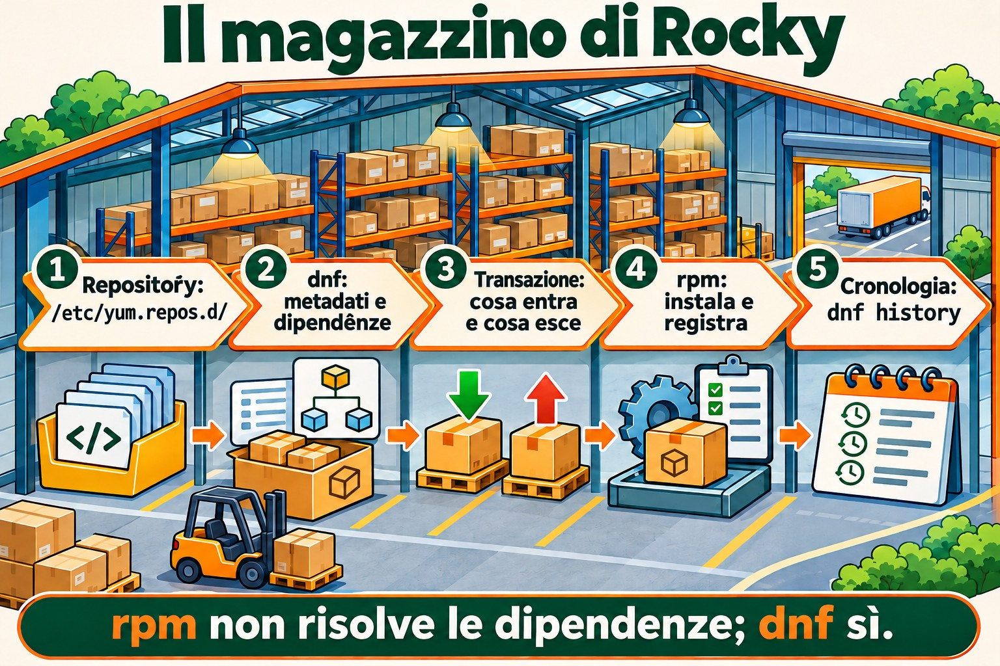
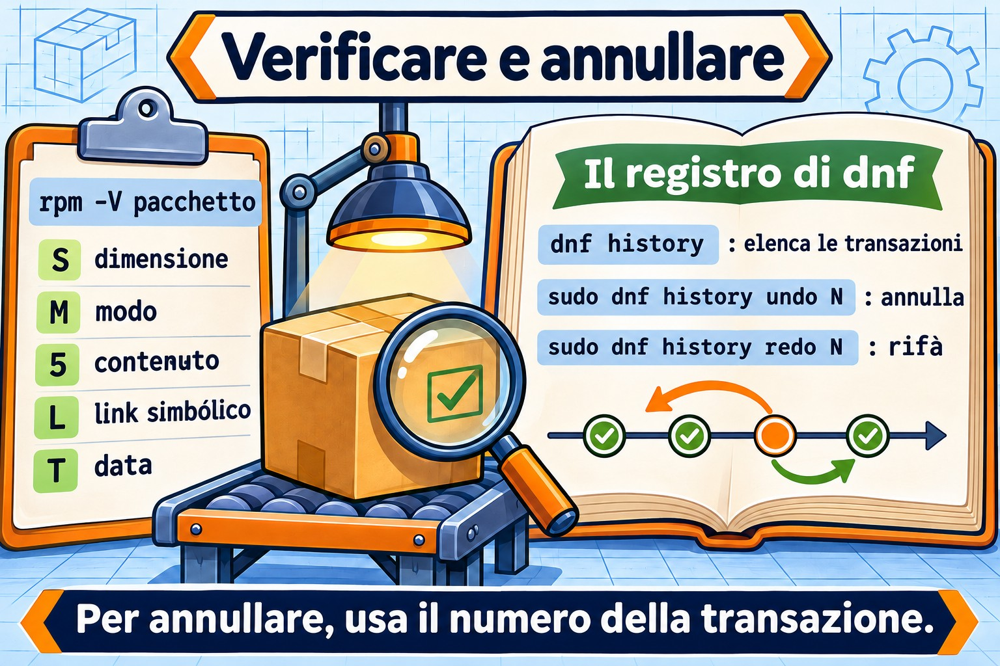

Lezione 6.2 · Pacchetti su Rocky
Nella lezione scorsa hai imparato il mondo Debian: apt compra, dpkg conserva. Oggi è lo stesso magazzino con nomi diversi: dnf compra, rpm conserva. La logica è identica, quindi questa lezione va più veloce. Quello che Rocky ha di diverso, e di molto buono, è la cronologia con annullamento (dnf history undo) e la verifica di integrità (rpm -V). Entrambe salvano server in produzione.
Il cuore di questa lezione:
dnf install/remove/upgrade/search/info/provides,dnf install ./arquivo.rpm,rpm -qa/-qi/-ql/-qc/-qf,rpm -V,dnf historyednf history undo,.rpmnewe.rpmsave. Il resto è approfondimento.
| Scheda | |
|---|---|
| Modulo | M6 · Software, lezione 2 di 5 |
| Quando | Settimana 10 |
| Alla fine sei in grado di | Installare, rimuovere e aggiornare pacchetti con dnf; scoprire proprietario e contenuto dei pacchetti con rpm; verificare se qualcuno ha modificato i file di un pacchetto; annullare una transazione tramite la cronologia |
| Prerequisiti | Lezione 6.1 · rocky-lab con internet |
| Durata | ~2h30 |
| Snapshot | m6a2-inicio e m6a2-fim, solo sulla rocky-lab (201). La debian-lab riposa |
1 · Riscaldamento
Rispondi prima di leggere. Le soluzioni sono alla fine della lezione.
rpm -i pacote.rpmcerca le dipendenze mancanti?- Hai installato un pacchetto ieri e ha rotto un servizio. Su Rocky, si può annullare quell'intera installazione, dipendenze incluse, con un solo comando?
- Sospetti che qualcuno abbia modificato
/etc/ssh/sshd_confige il binario disshd. Esiste un modo per chiedere al sistema "cosa è cambiato da quando il pacchetto è stato installato?"
2 · Perché conta
| La richiesta | La risposta sbagliata | Cosa provoca |
|---|---|---|
| "Installa l'agente di backup sul server" | Scaricare un .rpm da un sito qualsiasi ed eseguire rpm -ivh --nodeps | Pacchetto senza le librerie di cui ha bisogno, che poi fallisce, e un database rpm di cui dnf d'ora in poi si lamenta |
| "Hanno aggiornato ieri e il servizio si è fermato" | Reinstallare pacchetti a caso, oppure rpm -e --nodeps su quello che sembra colpevole | Ore di tentativi. dnf history mostrerebbe la transazione esatta, e undo la annullerebbe |
| "sshd è strano, qualcuno ci ha messo mano?" | Aprire i file e guardare "a occhio" | Non vedi un binario sostituito né un permesso cambiato. rpm -V openssh-server lo mostra in pochi secondi |
"Il comando semanage non esiste qui" | Cercare su Google e installare il primo pacchetto suggerito | Pacchetto sbagliato, o di un'altra versione. dnf provides risponde con il pacchetto giusto del tuo repository |
3 · Modello mentale
È lo stesso magazzino della lezione 6.1. rpm è il magazziniere: installa un pacchetto alla volta, conserva il registro di tutto e controlla che niente sia stato toccato. dnf è l'addetto agli acquisti: legge i cataloghi dei repository, calcola le dipendenze, scarica tutto e consegna a rpm. La differenza è che questo addetto annota ogni acquisto in un libro numerato. E qualsiasi acquisto del libro può essere restituito.
/etc/yum.repos.d/*.repo (de onde comprar)
|
v
dnf --- baixa metadados ---> /var/cache/dnf/ (catálogos e .rpm baixados)
|
| resolve dependências, monta a transação
v
rpm --- instala ---> banco rpm (/var/lib/rpm) (o que está instalado, arquivo por arquivo)
|
v
/var/lib/dnf/history.sqlite (o livro: transação 1, 2, 3... com undo)
/var/log/dnf.log, /var/log/dnf.rpm.logNelle versioni più recenti della famiglia RHEL, il database rpm sta in /usr/lib/sysimage/rpm e /var/lib/rpm punta lì. Per te, è indifferente: a parlare con il database è sempre rpm.


4 · L'essenziale
dnf: l'uso di tutti i giorni
| Comando | Cosa fa |
|---|---|
dnf check-update | Elenca cosa ha un aggiornamento (non installa niente) |
sudo dnf upgrade | Aggiorna tutto (dnf update è lo stesso comando, nome vecchio) |
sudo dnf upgrade X | Aggiorna solo il pacchetto X |
dnf search termo | Cerca nel nome e nel riassunto |
dnf info X | Versione, repository, dimensione, descrizione |
dnf provides /caminho o dnf provides '*/semanage' | Quale pacchetto fornisce quel file (installato o no) |
sudo dnf install X | Installa con le dipendenze |
sudo dnf install ./arquivo.rpm | Installa un .rpm locale risolvendo le dipendenze |
sudo dnf remove X | Rimuove X e le dipendenze che usava solo lui |
sudo dnf reinstall X | Reinstalla la stessa versione |
sudo dnf downgrade X | Torna a una versione precedente, se il repository ce l'ha |
sudo dnf autoremove | Rimuove le dipendenze orfane |
dnf list installed / dnf list available | Installati / disponibili |
dnf repolist | Repository attivi |
sudo dnf clean all / sudo dnf makecache | Pulisce la cache / riscarica i metadati |
Differenza importante rispetto a Debian: dnf non ha un passo update separato. Controlla i metadati da solo quando sono vecchi. E dnf remove si porta già via le dipendenze orfane di quel pacchetto, senza aspettare un autoremove.
Gruppi: dnf group list mostra insiemi già pronti, e sudo dnf group install "Development Tools" installa un insieme intero.
Sicurezza: dnf updateinfo list --security elenca gli avvisi di sicurezza in sospeso, e sudo dnf upgrade --security applica solo quelli.
rpm: le domande al magazziniere
Tutto ciò che comincia con -q (query) è sola lettura e non ha bisogno di sudo.
| Comando | Domanda a cui risponde |
|---|---|
rpm -qa | Tutto ciò che è installato (con | grep, è il tuo dpkg -l) |
rpm -q X | X è installato? Quale versione? |
rpm -qi X | Scheda del pacchetto: versione, data di installazione, origine |
rpm -ql X | File che X ha installato (il dpkg -L) |
rpm -qc X | Solo i file di configurazione di X |
rpm -qd X | Solo la documentazione |
rpm -qf /caminho | Di quale pacchetto è questo file (il dpkg -S) |
rpm -qR X | Da cosa dipende X |
rpm -q --changelog X | head | Cronologia delle modifiche del pacchetto (ottima per trovare una CVE corretta) |
rpm -q --scripts X | Script che girano all'installazione e alla rimozione |
rpm -qpi arq.rpm / rpm -qpl arq.rpm | Scheda e file di un .rpm non installato (la p sta per package file) |
E le operazioni, che devi conoscere ma quasi non usare nel lavoro di tutti i giorni:
| Comando | Cosa fa |
|---|---|
rpm -ivh arq.rpm | Installa (i), verboso (v), con barra di avanzamento (h). Non risolve le dipendenze |
rpm -Uvh arq.rpm | Aggiorna, oppure installa se non esiste |
rpm -Fvh arq.rpm | Aggiorna solo se esiste già (freshen) |
rpm -e X | Rimuove (erase) |
--nodeps, --force | Ignorano le protezioni. Su un server, quasi sempre sono un errore |
rpm --import chave.asc | Importa una chiave GPG di repository (altro nella lezione 6.3) |
rpm -K arq.rpm | Controlla la firma e l'integrità di un .rpm |
rpm -V: "cosa è cambiato?"
rpm conserva dimensione, hash, permessi, proprietario e data di ogni file installato. rpm -V X confronta tutto questo con il disco e mostra solo ciò che è cambiato. Nessun output = non è cambiato niente.
S.5....T. c /etc/ssh/sshd_config| Lettera | Cosa è cambiato |
|---|---|
S | Dimensione |
M | Modo (permessi o tipo) |
5 | Contenuto (hash) |
D | Dispositivo |
L | Destinazione del link simbolico |
U / G | Proprietario / gruppo |
T | Data di modifica |
c prima del percorso | È un file di configurazione: cambiarlo è normale |
missing | Il file è sparito |
Lettura da admin: 5 su un file c è qualcuno che ha modificato la config, normale. 5 su un binario in /usr/sbin è un allarme. rpm -Va verifica l'intero sistema (ci mette un po', e mostra molte config modificate; filtra ciò che non ha c).
.rpmnew e .rpmsave
Debian chiede cosa fare quando hai modificato una config e il pacchetto ne porta una nuova. rpm non chiede: decide in base alla regola del pacchetto e lascia un file accanto.
| Situazione | Cosa fa rpm |
|---|---|
Aggiornamento, hai modificato la config, il pacchetto ha segnato noreplace (il caso più comune) | Mantiene la tua. La nuova va in arquivo.rpmnew |
Aggiornamento, hai modificato, il pacchetto non ha segnato noreplace | Installa la nuova. La tua va in arquivo.rpmsave |
| Rimozione di un pacchetto la cui config hai modificato | Cancella il pacchetto, e la tua config resta come arquivo.rpmsave |
Compito di manutenzione dopo ogni upgrade importante:
sudo find /etc -name '*.rpmnew' -o -name '*.rpmsave'Ogni .rpmnew è una config nuova che nessuno ha confrontato con la tua (diff tra le due).
dnf history: il libro degli acquisti
| Comando | Cosa fa |
|---|---|
sudo dnf history | Elenca le transazioni: ID, comando, data, azione, quantità |
sudo dnf history info N | Dettaglio della transazione N: chi, quando, ogni pacchetto |
sudo dnf history list X | Solo le transazioni che hanno toccato il pacchetto X |
sudo dnf history undo N | Annulla la transazione N (ciò che ha installato, rimuove; ciò che ha rimosso, reinstalla) |
sudo dnf history rollback N | Riporta il sistema allo stato subito dopo la transazione N, annullando tutte le successive |
sudo dnf history redo N | Ripete la transazione N |
dnf repoquery --userinstalled | Ciò che è stato richiesto da qualcuno, non tirato dentro come dipendenza (l'apt-mark showmanual) |
Limite di undo: per reinstallare la versione vecchia, questa deve esistere ancora nel repository. Per annullare un'installazione, funziona sempre.
Congelare la versione
L'equivalente di apt-mark hold:
sudo dnf install -y python3-dnf-plugin-versionlock
sudo dnf versionlock add X
dnf versionlock list
sudo dnf versionlock delete XAlternativa grossolana: exclude=X* in /etc/dnf/dnf.conf, che nasconde il pacchetto da tutte le operazioni.
Rocky × Debian
| Compito | Rocky | Debian |
|---|---|---|
| Aggiornare il catalogo | automatico (o dnf makecache) | apt update |
| Aggiornare i pacchetti | dnf upgrade | apt upgrade |
| Installare / rimuovere | dnf install / dnf remove | apt install / apt remove |
| File locale risolvendo le dipendenze | dnf install ./x.rpm | apt install ./x.deb |
| Strumento di basso livello | rpm | dpkg |
| Elencare gli installati | rpm -qa | dpkg -l |
| File del pacchetto | rpm -ql | dpkg -L |
| Proprietario del file | rpm -qf | dpkg -S |
| Chi fornisce un file non installato | dnf provides | apt-file search |
| Config preservata | .rpmnew / .rpmsave | domanda interattiva e rc |
| Verificare l'integrità | rpm -V | debsums (pacchetto extra) |
| Cronologia con annullamento | dnf history undo | non c'è (solo log) |
| Congelare | dnf versionlock | apt-mark hold |
| Repository | /etc/yum.repos.d/*.repo | /etc/apt/sources.list.d/ |
E zypper?
zypper è il gestore di openSUSE e di SLES. Non avrai una VM con lui. Basta riconoscerlo: zypper refresh (catalogo), zypper install X, zypper remove X, zypper search X, zypper update, zypper repos. Sotto il cofano, è rpm come gli altri.
5 · Lab guidato
Tutto sulla rocky-lab (201). La debian-lab oggi riposa. Ti servirà internet nella VM.
Passo 0 · Snapshot e cartella. In Proxmox:
qm snapshot 201 m6a2-inicioNella VM:
mkdir -p ~/lab62 && cd ~/lab62Passo 1 · Da dove arrivano i pacchetti.
dnf repolist
ls /etc/yum.repos.d/
grep -E '^(name|enabled|gpgcheck)=' /etc/yum.repos.d/*.repo | head -20Risultato atteso: i repository BaseOS, AppStream ed extras attivi (enabled=1), tutti con gpgcheck=1. BaseOS è il nucleo del sistema; AppStream, le applicazioni. Aprirai davvero questi file nella lezione 6.3.
Passo 2 · Cercare prima di installare.
dnf check-update | head
dnf search tree | head
dnf info tree
dnf provides '*/semanage'dnf provides risponde qualcosa come policycoreutils-python-utils. È così che trovi il pacchetto di un comando che non esiste sulla macchina.
Passo 3 · Installare e fare domande a rpm.
sudo dnf install -y tree httpd
rpm -q tree httpd
rpm -qi tree | head -12
rpm -ql tree
rpm -qf /usr/sbin/httpd
rpm -qf /etc/httpd/conf/httpd.confNota le ultime due righe: su Rocky, il binario e la config di Apache stanno in un pacchetto httpd-core, e httpd è quasi solo un "ombrello". È la stessa idea di nginx-common su Debian. Salva il nome vero in una variabile:
PKG=$(rpm -qf --qf '%{NAME}' /etc/httpd/conf/httpd.conf)
echo $PKG
rpm -qc $PKGPasso 4 · rpm -V dal vivo.
rpm -V $PKGNessun output: non è cambiato niente dall'installazione. Ora modifica la config e guarda:
echo '# teste lab62' | sudo tee -a /etc/httpd/conf/httpd.conf
rpm -V $PKGRisultato atteso: S.5....T. c /etc/httpd/conf/httpd.conf. Dimensione, contenuto e data sono cambiati, e la c dice che è una config. È normale: ogni admin modifica le config.
Passo 5 · Il libro e l'annullamento.
sudo dnf history | head
sudo dnf history info lastAnnota l'ID della transazione del passo 3 (quella con install -y tree httpd). Ora annulla:
sudo dnf history undo ID -y
rpm -q tree httpd
ls /etc/httpd/conf/Risultato atteso: tree e httpd non sono più installati, e sono uscite anche le dipendenze arrivate con loro. In /etc/httpd/conf/ è rimasto un httpd.conf.rpmsave: rpm non cancella una config che hai modificato, la conserva accanto.
Passo 6 · Un .rpm a mano.
dnf download httpd
ls -l *.rpm
rpm -qpi httpd-2*.rpm | head -8
rpm -qpR httpd-2*.rpm | head
rpm -K httpd-2*.rpm
sudo rpm -ivh httpd-2*.rpmRisultato atteso: rpm -K dice digests signatures OK (il pacchetto è arrivato firmato ed è integro). rpm -ivh fallisce con Failed dependencies. Nota la differenza con Debian: rpm non installa a metà. Rifiuta tutto, e il database resta pulito. Ora nel modo giusto:
sudo dnf install -y ./httpd-2*.rpm
rpm -q httpdSe dnf download non esiste, manca dnf-plugins-core: sudo dnf install -y dnf-plugins-core.
Passo 7 · Aprire un .rpm senza installarlo.
dnf download tree
mkdir extraido && cd extraido
rpm2cpio ../tree-*.rpm | cpio -idmv
find . -type f | head
cd ..rpm2cpio trasforma il .rpm in un archivio cpio, e cpio -idmv estrae nella cartella corrente. Serve per prendere un file da dentro il pacchetto senza installare niente. (Se manca cpio: sudo dnf install -y cpio.)
Passo 8 · Cosa è stato richiesto, cosa è dipendenza, e sicurezza.
dnf repoquery --userinstalled | grep -E '^(httpd|tree)'
dnf updateinfo list --security | head
rpm -qa --last | headrpm -qa --last ordina i pacchetti per data di installazione: il più recente per primo. È la risposta rapida a "cosa è cambiato su questa macchina?".
Passo 9 · I log.
sudo dnf history list httpd
sudo tail -n 20 /var/log/dnf.rpm.logPulizia:
sudo dnf remove -y httpd
sudo rm -f /etc/httpd/conf/httpd.conf.rpmsave
cd ~ && rm -r ~/lab62Decidi 1 · È comparso un .rpmnew
Dopo un dnf upgrade, trovi /etc/httpd/conf/httpd.conf.rpmnew accanto al httpd.conf che avevi modificato. Scegli un'opzione prima di continuare.
- A) L'aggiornamento è fallito a metà. Reinstalla il pacchetto.
- B) La tua config è stata mantenuta, e la nuova config predefinita è lì accanto. Confronta le due e porta dentro ciò che serve.
- C) rpm ha sostituito la tua config con quella nuova, e la tua vecchia è nel
.rpmnew.
| Se hai scelto | Risultato | Perché |
|---|---|---|
| A | Lavoro inutile | Non è fallito niente. Il .rpmnew è il comportamento normale di un %config(noreplace) |
| B | Giusto | rpm ha protetto la tua modifica e ha lasciato la versione nuova perché tu la confronti con diff -u httpd.conf httpd.conf.rpmnew |
| C | Confondi i suffissi | Quando è la tua a essere spostata, diventa .rpmsave. new = ciò che è arrivato; save = ciò che è stato conservato |
Da ricordare: .rpmnew = la nuova è rimasta accanto; .rpmsave = la tua è stata conservata accanto. Dopo il confronto, cancella quello che resta, altrimenti tra un anno nessuno sa quale sia quale.
Decidi 2 · L'aggiornamento di ieri ha rotto il servizio
In dnf history, la transazione 42 di ieri ha installato il pacchetto agente e aggiornato tre librerie. Dopo di lei, la 43 e la 44 hanno installato cose che serve a un altro admin. Il servizio è fermo dalla 42. Scegli un'opzione prima di continuare.
- A)
sudo dnf remove agente - B)
sudo dnf history undo 42 - C)
sudo dnf history rollback 41
| Se hai scelto | Risultato | Perché |
|---|---|---|
| A | A metà | agente se ne va, ma le tre librerie restano nella versione nuova, che potrebbe essere la colpevole |
| B | Annulla esattamente la 42 | Rimuove agente e riporta le tre librerie alla versione precedente (se è ancora nel repository). La 43 e la 44 restano |
| C | Rovina il lavoro del collega | rollback riporta il sistema allo stato dopo la 41, annullando la 42, la 43 e la 44 |
Da ricordare: undo N annulla una transazione; rollback N annulla tutto ciò che viene dopo N. Prima di entrambi, sudo dnf history info 42 per vedere cosa ha fatto davvero.
6 · Rompi e ripara
Guasto 1 · Permesso di un binario alterato.


sudo dnf install -y tree
sudo chmod 0644 /usr/bin/tree
tree /etc/yum.repos.dSintomo: Permission denied, anche se il file esiste ed è il tuo sistema.
Diagnosi:
ls -l /usr/bin/tree
rpm -V treeRisultato atteso: .M....... /usr/bin/tree. La M dice che il modo è cambiato, e senza c: è un binario, non una config. Questo non è normale.
Riparazione:
sudo rpm --restore tree
rpm -V tree && tree -L 1 /etc/yum.repos.drpm --restore restituisce proprietario, gruppo e permessi a ciò che il pacchetto ha registrato, senza reinstallare. Se fosse cambiato il contenuto (5), allora sì, sudo dnf reinstall tree.
Nella vita reale: un 5 su un binario di /usr/bin o /usr/sbin senza nessun aggiornamento che lo spieghi è segno di intrusione. Non reinstallare di corsa: cancelleresti le prove. Isola la macchina e chiama chi si occupa di sicurezza.
Guasto 2 · Installazione forzata.
mkdir -p ~/lab62q && cd ~/lab62q
dnf download httpd
sudo rpm -ivh --nodeps httpd-2*.rpm
rpm -q httpd
sudo dnf checkSintomo: rpm -q dice che httpd è installato, ma dnf check elenca dipendenze mancanti. Un systemctl start httpd fallirebbe. E ogni operazione di dnf da adesso in poi ricorderà il problema.
Riparazione: lascia che sia dnf a completare ciò che manca.
sudo dnf install -y httpd
sudo dnf checkdnf check senza output significa che il database è di nuovo coerente. (Se dnf non risolve, sudo rpm -e --nodeps httpd e reinstalla tramite dnf.)
Pulizia: sudo dnf remove -y httpd tree && cd ~ && rm -r ~/lab62q
Guasto 3 · Database rpm corrotto. Non provocare questo. Compare dopo un disco pieno o uno spegnimento brusco: rpm -qa dà errore, dnf si ferma con error: rpmdb open failed. Riparazione:
sudo cp -a /var/lib/rpm /root/rpm-backup-$(date +%F)
sudo rpmdb --rebuilddb
rpm -qa | wc -lPrima la copia, poi la ricostruzione. Sempre.
7 · Trappole
| Trappola | Cosa succede | Come evitarla |
|---|---|---|
rpm -ivh invece di dnf install ./ | Fallisce per una dipendenza, e il passo dopo diventa --nodeps | Per installare, sempre dnf. rpm serve per le domande |
--nodeps e --force "solo per farlo passare" | Database incoerente, servizio che non parte, futuri upgrade che si rompono | Se devi forzare, il pacchetto è sbagliato per quel sistema |
rollback quando volevi undo | Annulla il lavoro di altre persone | history info prima, e undo per una sola transazione |
Ignorare .rpmnew | Config vecchia che perde le opzioni nuove, o parametro che ha cambiato nome | find /etc -name '*.rpmnew' dopo ogni upgrade importante |
Confondere .rpmnew e .rpmsave | Cancellare la tua config credendo fosse quella predefinita | new = arrivato; save = conservato |
rpm -qf su un comando, non su un percorso | rpm -qf tree risponde "il file non esiste" | rpm -qf $(command -v tree) |
rpm -Va su un server carico | Tanto disco e tanto output di config modificate | Verifica i pacchetti che contano: rpm -V openssh-server sudo |
dnf upgrade senza guardare cosa arriva | Kernel nuovo, servizio riavviato all'ora sbagliata | dnf check-update prima, e finestra di manutenzione |
exclude= dimenticato in dnf.conf | Pacchetto che non riceve mai più correzioni di sicurezza | versionlock (che ha list) e revisione mensile |
8 · Quiz
Rispondi senza guardare. Le soluzioni sono alla fine della lezione.
- Qual è la differenza tra
rpm -ql httpderpm -qpl httpd-2.4.rpm? rpm -V sudomostra..5....T. /usr/bin/sudo. Cosa significa, e qual è il tuo primo passo?- Hai modificato
/etc/httpd/conf/httpd.conf. Cosa succede quando rimuovi il pacchetto? E quando aggiorni, se il pacchetto segna la config comenoreplace? - Qual è la differenza tra
dnf history undo 42ednf history rollback 42? - Su una Rocky senza
diginstallato, come scopri quale pacchetto installare? - Which rpm query option works on a package file that is not installed? a)
-qab)-qfc)-qpd)-V
9 · Promemoria
Da sapere a memoria:
| Voglio... | Comando |
|---|---|
| Vedere se ci sono aggiornamenti / aggiornare | dnf check-update / sudo dnf upgrade |
| Installare / rimuovere | sudo dnf install X / sudo dnf remove X |
| Installare un .rpm locale | sudo dnf install ./arquivo.rpm |
| Cercare / leggere info | dnf search X / dnf info X |
| Chi fornisce questo file/comando | dnf provides '*/comando' |
| È installato? | rpm -q X |
| File / config del pacchetto | rpm -ql X / rpm -qc X |
| Di chi è questo file | rpm -qf /caminho |
| Cosa è cambiato nel pacchetto | rpm -V X |
| Cronologia / annullare | sudo dnf history / sudo dnf history undo N |
Da consultare:
| Voglio... | Comando |
|---|---|
| Dettaglio di una transazione | sudo dnf history info N |
| Tornare indietro fino a un punto | sudo dnf history rollback N |
| Scheda / file di un .rpm non installato | rpm -qpi arq.rpm / rpm -qpl arq.rpm |
| Dipendenze | rpm -qR X |
| Changelog (CVE corretta?) | rpm -q --changelog X | head |
| Installati per data | rpm -qa --last | head |
| Richiesti da qualcuno | dnf repoquery --userinstalled |
| Controllare la firma di un .rpm | rpm -K arq.rpm |
| Estrarre senza installare | rpm2cpio arq.rpm | cpio -idmv |
| Ripristinare i permessi | sudo rpm --restore X |
| Database coerente? | sudo dnf check |
| Solo aggiornamenti di sicurezza | sudo dnf upgrade --security |
| Congelare la versione | sudo dnf versionlock add X |
| Gruppi | dnf group list / sudo dnf group install "Nome" |
| Config in sospeso | sudo find /etc -name '*.rpmnew' -o -name '*.rpmsave' |
| Log | /var/log/dnf.log, /var/log/dnf.rpm.log |
Flashcard:
rpm -icon dipendenza mancante → rifiuta tutto, non installa a metà (diverso da dpkg).- Lettere di
rpm -V→ S dimensione, M modo, 5 contenuto, L link, U proprietario, G gruppo, T data;c= config. .rpmnew×.rpmsave→ new: la nuova è arrivata accanto; save: la tua è stata conservata accanto.undo×rollback→ undo annulla una transazione; rollback annulla tutto ciò che viene dopo N.-qf×-qp→ -qf: proprietario di un file; -qp: fare la domanda a un .rpm non installato.
10 · Checklist e chiusura
- [ ] Installo, rimuovo e aggiorno con dnf, anche un .rpm locale
- [ ] Trovo il pacchetto di un comando che non esiste (
dnf provides) - [ ] Rispondo a "di chi è questo file?" e "quali file ha questo pacchetto?"
- [ ] Leggo l'output di
rpm -Ve so quando è un allarme - [ ] So cosa sono
.rpmnewe.rpmsavee dove cercarli - [ ] Annullo una transazione con
dnf history undo - [ ] So perché
--nodepsè quasi sempre un errore
Ultimo esercizio, senza guardare la lezione: sulla rocky-lab, installa htop (se non lo trovi, cerca con dnf search; potrebbe stare in EPEL, argomento della lezione 6.3, quindi usa tmux al suo posto). Scopri da quale pacchetto viene il binario, cambiane il permesso, dimostra la modifica con rpm -V, ripara con rpm --restore e, alla fine, annulla l'installazione tramite dnf history.
Reboot e verifica:
sudo reboot
# dopo il riavvio:
sudo dnf check
sudo dnf history | head -5
rpm -V openssh-server sudodnf check non deve mostrare niente. rpm -V può mostrare solo le config (c) che hai modificato nelle lezioni precedenti.
Snapshot di fine (in Proxmox):
qm snapshot 201 m6a2-fim11 · Nella vita reale
Missione, sola lettura. Su un server Rocky, Alma o RHEL che già amministri, esegui solo questi comandi. Niente install, upgrade, remove o undo.
cat /etc/os-release | head -3
dnf repolist
sudo dnf history | head -15
rpm -qa --last | head -15
rpm -V openssh-server sudo
sudo find /etc -name '*.rpmnew' -o -name '*.rpmsave'
grep -i exclude /etc/dnf/dnf.confDomande a cui rispondere:
- Quali repository sono attivi? Ce n'è qualcuno fuori standard (EPEL, di un fornitore)?
- Qual è stata l'ultima transazione, quando e chi l'ha fatta?
rpm -Vha mostrato qualcosa senzac? (Se ha mostrato5su un binario, fermati e avvisa chi si occupa di sicurezza.)- C'è un
.rpmnewo.rpmsavedimenticato? Di quando? - C'è
exclude=indnf.conf? Qualcuno sa perché?
Diario: annota per ogni server RHEL-like i repository extra e i pacchetti congelati, con il motivo.
Domani, senza guardare: scrivi su un foglio le lettere di rpm -V e cosa significa ciascuna.
12 · Approfondire quando vuoi
- dnf-automatic: aggiornamenti automatici nella famiglia RHEL (il corrispettivo di
unattended-upgrades). Arriva nel modulo di manutenzione. dnf needs-restarting -r: dice se il server ha bisogno di un reboot dopo gli aggiornamenti (kernel, glibc, systemd).- Moduli di AppStream (
dnf module list): versioni alternative di PHP, Node, PostgreSQL su Rocky 8 e 9. Nella famiglia RHEL 10 questa forma è stata abbandonata a favore di pacchetti con la versione nel nome. - dnf5: la nuova generazione di dnf, già predefinita su Fedora. I comandi di tutti i giorni sono gli stessi.
- rpmbuild e file .spec: come si costruisce un .rpm. Utile per impacchettare i tuoi script e distribuirli con dnf.
rpm --querytagse--qf: output formattato di rpm, ottimo per i report (rpm -qa --qf '%{NAME} %{INSTALLTIME:date}\n').
DeepTutor (http://10.1.0.149:3782, KB "Curso Linux Sysadmin"):
!explica a saída do rpm -V e quando ela indica invasão!feynman a diferença entre .rpmnew e .rpmsave!quiz Aula 6.2, 5 perguntas comparando dnf/rpm com apt/dpkg
Soluzioni commentate
Riscaldamento
- No.
rpm -iinstalla solo quel file. Se manca una dipendenza, si ferma conFailed dependenciese non installa niente (dpkg, al contrario, lascia il pacchetto a metà). A risolvere le dipendenze èdnf install ./arquivo.rpm. - Sì.
sudo dnf historymostra la transazione, esudo dnf history undo Nannulla tutto ciò che ha fatto, dipendenze incluse. Per annullare un aggiornamento, la versione vecchia deve essere ancora nel repository. - Sì:
rpm -V openssh-server. Confronta dimensione, hash, permessi, proprietario e data di ogni file con quanto registrato all'installazione. Una config modificata compare conc; un binario alterato compare senza.
Quiz
rpm -ql httpdfa la domanda al database su un pacchetto installato.rpm -qpl arquivo.rpmla fa al file .rpm, installato o no. Lapsta per package file.- Il contenuto (
5) e la data (T) del binario/usr/bin/sudosono cambiati, e non è una config (non hac). Primo passo:sudo dnf history list sudoerpm -qi sudoper vedere se c'è stato un aggiornamento legittimo incompleto. Se non c'è nessuna spiegazione, trattalo come una possibile intrusione: isola la macchina e non reinstallare prima di aver preservato le prove. - Alla rimozione, il pacchetto se ne va e la tua config modificata resta come
httpd.conf.rpmsave. All'aggiornamento connoreplace, la tua config resta al suo posto e la nuova arriva comehttpd.conf.rpmnew. undo 42annulla solo la transazione 42.rollback 42riporta il sistema allo stato subito dopo la 42, annullando tutte le successive (43, 44...).dnf provides '*/bin/dig'(odnf provides dig). La risposta è il pacchettobind-utils. L'equivalente su Debian sarebbeapt-file search bin/dig.- c)
-qp.-qaelenca gli installati,-qftrova il proprietario di un file installato, e-Vverifica pacchetti installati. Solopfa la domanda a un file .rpm.